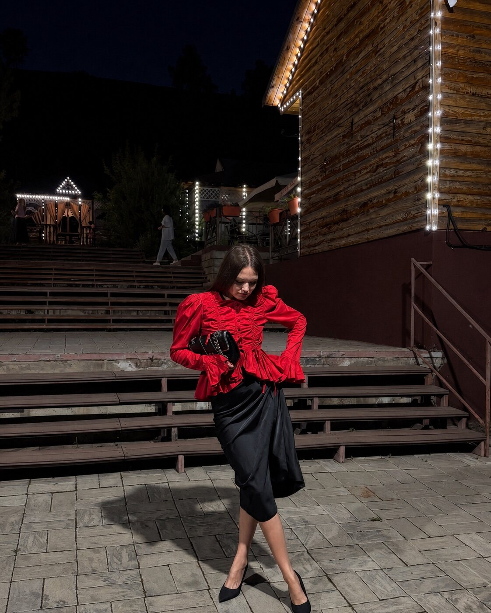

1 666 ₽
Совет от рун
Короткий ответ на один конкретный вопрос, когда нужен быстрый ориентир.
Руны помогают посмотреть на энергию ситуации здесь и сейчас. Свечи и практики работают с намерением, состоянием и символическим завершением процессов.

Скрытые процессы, препятствия, направление и возможные точки силы — без обещания единственного предопределённого исхода.
Короткий ответ на один конкретный вопрос, когда нужен быстрый ориентир.
Энергия ситуации, скрытые процессы, препятствия, варианты развития и подходящее направление.
Индивидуально под запрос: защита, очищение, усиление, деньги, реализация, состояние или отношения.
Картина тенденций на 12 месяцев: состояние, отношения, работа, события, риски и точки силы.
Свеча здесь — предмет и инструмент личной практики, а не обещание магически решить ситуацию вместо человека.
Для намерений, очищения, личных практик, работы с состоянием и создания ритуального пространства.
Символическое завершение привязок, отношений или ситуаций, которые продолжают удерживать внимание.
Для практики очищения пространства и создания ощущения обновления и порядка.
Если не уверены, что именно подходит, коротко опишите ситуацию Лизе.
Рунические и энергетические форматы не гарантируют конкретного результата. Они не являются медицинской, психологической, юридической или финансовой консультацией.
Символический взгляд на ситуацию, структуру запроса, возможные направления и личную практику.
Гарантированное событие, исцеление, доход, возвращение человека или замену профессиональной помощи.
Можно написать без идеальной формулировки — коротко и своими словами.
Написать Лизе